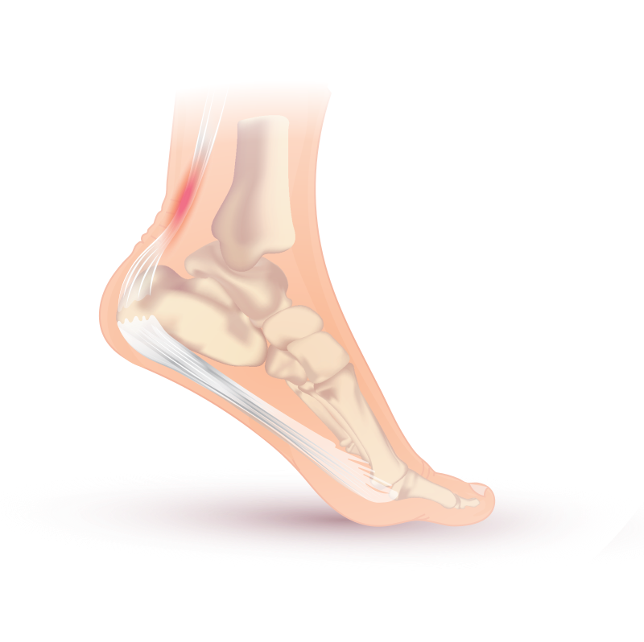

Tendinitis

CAUSES
Tendinitis most often is caused by repetitive, minor impact on the affected area, or from a sudden, more serious injury.
SYMPTOMS
One of the main symptoms of tendinitis is pain at the site of the tendon and surrounding area. Pain may be a gradual buildup or sudden and severe, especially if calcium deposits are present.
TREATMENTS
If the condition does not improve in about three weeks, see your doctor.
- Corticosteroid injections: Corticosteroids (often called “steroids”) are often used because they work quickly to decrease the inflammation and pain.
- Physical therapy: Physical therapy includes range of motion exercises and splinting (thumb, forearm, hands).
- Surgery: This is rarely needed and only for severe problems that do not respond to other treatments.